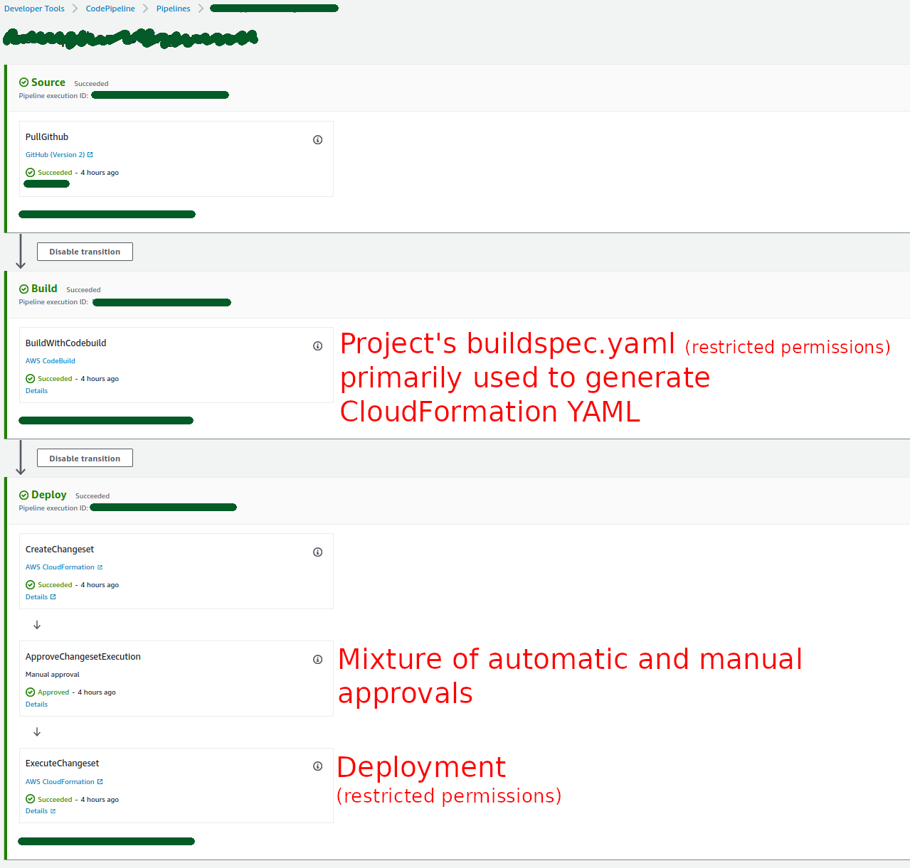
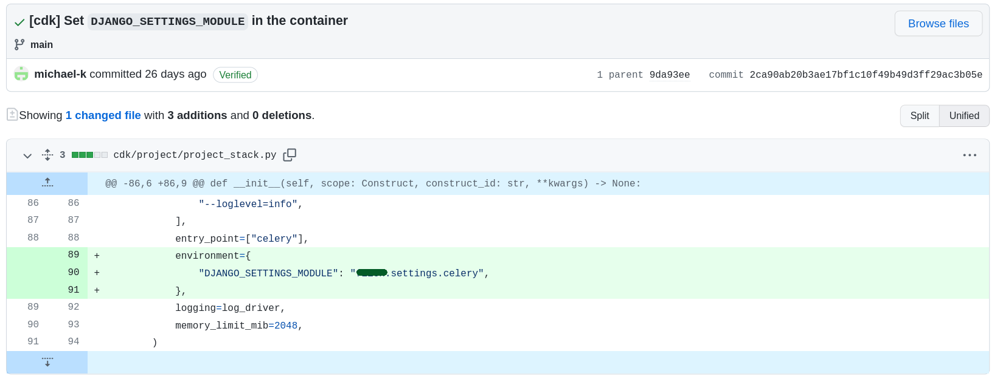
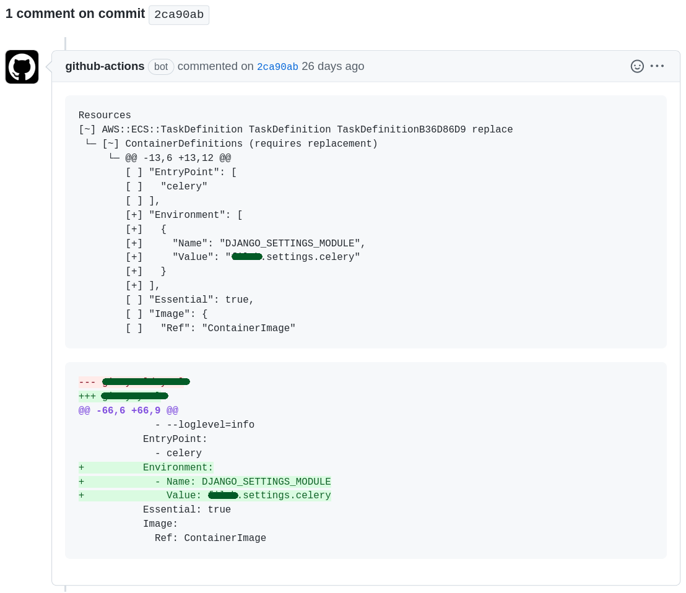

Background
- Most infrastructure is managed in a single repository
- Project specific CodePipelines and CloudFormation stacks

Goal 1: Generate CloudFormation templates with AWS CDK
---
version: 0.2
phases:
install:
runtime-versions:
nodejs: 14 // 😠
python: 3.9 // 😠
commands:
- npm install -g aws-cdk@">=2.21.1"
- python3 -m pip install -r requirements.txt
build:
commands:
- cdk synth > ${DEPLOY_TEMPLATE_FILE_NAME}
- cfn-lint ${DEPLOY_TEMPLATE_FILE_NAME}
artifacts:
type: zip
files:
- ${DEPLOY_TEMPLATE_FILE_NAME}
from aws_cdk import Stack, aws_codebuild as codebuild
from constructs import Construct
class PlaygroundStack(Stack):
def __init__(self, scope: Construct, id_: str, **kwargs) -> None:
super().__init__(scope, id_, **kwargs)
codebuild.Project(
self,
"PlaygroundCodeBuild",
source=codebuild.Source.git_hub(
owner="owner",
repo="repo",
branch_or_ref="main",
clone_depth=1,
fetch_submodules=False,
report_build_status=True,
webhook=False,
),
build_spec=codebuild.BuildSpec.from_source_filename("buildspec.yml"),
cache=None,
description="This is a description.",
environment=codebuild.BuildEnvironment(
build_image=codebuild.LinuxBuildImage.STANDARD_5_0,
compute_type=codebuild.ComputeType.SMALL,
environment_variables={},
privileged=True,
),
)
Works, but …
Resources:
PlaygroundCodeBuildRoleCBACFC80:
Type: AWS::IAM::Role
Properties:
AssumeRolePolicyDocument:
Statement:
- Action: sts:AssumeRole
Effect: Allow
Principal:
Service: codebuild.amazonaws.com
Version: "2012-10-17"
Metadata:
aws:cdk:path: playground/PlaygroundCodeBuild/Role/Resource
PlaygroundCodeBuildRoleDefaultPolicy68E453E0:
Type: AWS::IAM::Policy
Properties:
PolicyDocument:
Statement:
- Action:
- logs:CreateLogGroup
- logs:CreateLogStream
- logs:PutLogEvents
Effect: Allow
Resource:
- Fn::Join:
- ""
- - "arn:"
- Ref: AWS::Partition
- ":logs:"
- Ref: AWS::Region
- ":"
- Ref: AWS::AccountId
- :log-group:/aws/codebuild/
- Ref: PlaygroundCodeBuild4D1EEA94
- Fn::Join:
- ""
- - "arn:"
- Ref: AWS::Partition
- ":logs:"
- Ref: AWS::Region
- ":"
- Ref: AWS::AccountId
- :log-group:/aws/codebuild/
- Ref: PlaygroundCodeBuild4D1EEA94
- :*
- Action:
- codebuild:CreateReportGroup
- codebuild:CreateReport
- codebuild:UpdateReport
- codebuild:BatchPutTestCases
- codebuild:BatchPutCodeCoverages
Effect: Allow
Resource:
Fn::Join:
- ""
- - "arn:"
- Ref: AWS::Partition
- ":codebuild:"
- Ref: AWS::Region
- ":"
- Ref: AWS::AccountId
- :report-group/
- Ref: PlaygroundCodeBuild4D1EEA94
- -*
Version: "2012-10-17"
PolicyName: PlaygroundCodeBuildRoleDefaultPolicy68E453E0
Roles:
- Ref: PlaygroundCodeBuildRoleCBACFC80
Metadata:
aws:cdk:path: playground/PlaygroundCodeBuild/Role/DefaultPolicy/Resource
PlaygroundCodeBuild4D1EEA94:
Type: AWS::CodeBuild::Project
Properties:
Artifacts:
Type: NO_ARTIFACTS
Environment:
ComputeType: BUILD_GENERAL1_SMALL
Image: aws/codebuild/standard:5.0
ImagePullCredentialsType: CODEBUILD
PrivilegedMode: true
Type: LINUX_CONTAINER
ServiceRole:
Fn::GetAtt:
- PlaygroundCodeBuildRoleCBACFC80
- Arn
Source:
BuildSpec: buildspec.yml
GitCloneDepth: 1
Location: https://github.com/owner/repo.git
ReportBuildStatus: true
Type: GITHUB
Cache:
Type: NO_CACHE
Description: This is a description.
EncryptionKey: alias/aws/s3
SourceVersion: main
Triggers:
Webhook: false
Metadata:
aws:cdk:path: playground/PlaygroundCodeBuild/Resource
CDKMetadata:
Type: AWS::CDK::Metadata
Properties:
Analytics: v2:deflate64:H4sIAAAAAAAA/zWMQQ7CIBBFz9I9jGldGNe9AMEDGDpgnJYyCYWYhnB3K+rqv/z38wcYeug789ok2kV6mqDcksFFaLdxjujE4e4F2bopk7dQVOTZYRLjI/ywCjIrFM3efdqWij3h3kaNam3qf3rwyMFSIg5VqD09OZzOcIVLN29EMuaQaHWgv/kGar52TacAAAA=
Metadata:
aws:cdk:path: playground/CDKMetadata/Default
Condition: CDKMetadataAvailable
Conditions:
CDKMetadataAvailable:
Fn::Or:
- Fn::Or:
- Fn::Equals:
- Ref: AWS::Region
- af-south-1
- Fn::Equals:
- Ref: AWS::Region
- ap-east-1
- Fn::Equals:
- Ref: AWS::Region
- ap-northeast-1
- Fn::Equals:
- Ref: AWS::Region
- ap-northeast-2
- Fn::Equals:
- Ref: AWS::Region
- ap-south-1
- Fn::Equals:
- Ref: AWS::Region
- ap-southeast-1
- Fn::Equals:
- Ref: AWS::Region
- ap-southeast-2
- Fn::Equals:
- Ref: AWS::Region
- ca-central-1
- Fn::Equals:
- Ref: AWS::Region
- cn-north-1
- Fn::Equals:
- Ref: AWS::Region
- cn-northwest-1
- Fn::Or:
- Fn::Equals:
- Ref: AWS::Region
- eu-central-1
- Fn::Equals:
- Ref: AWS::Region
- eu-north-1
- Fn::Equals:
- Ref: AWS::Region
- eu-south-1
- Fn::Equals:
- Ref: AWS::Region
- eu-west-1
- Fn::Equals:
- Ref: AWS::Region
- eu-west-2
- Fn::Equals:
- Ref: AWS::Region
- eu-west-3
- Fn::Equals:
- Ref: AWS::Region
- me-south-1
- Fn::Equals:
- Ref: AWS::Region
- sa-east-1
- Fn::Equals:
- Ref: AWS::Region
- us-east-1
- Fn::Equals:
- Ref: AWS::Region
- us-east-2
- Fn::Or:
- Fn::Equals:
- Ref: AWS::Region
- us-west-1
- Fn::Equals:
- Ref: AWS::Region
- us-west-2
Parameters:
BootstrapVersion:
Type: AWS::SSM::Parameter::Value
Default: /cdk-bootstrap/hnb659fds/version
Description: Version of the CDK Bootstrap resources in this environment, automatically retrieved from SSM Parameter Store. [cdk:skip]
Rules:
CheckBootstrapVersion:
Assertions:
- Assert:
Fn::Not:
- Fn::Contains:
- - "1"
- "2"
- "3"
- "4"
- "5"
- Ref: BootstrapVersion
AssertDescription: CDK bootstrap stack version 6 required. Please run 'cdk bootstrap' with a recent version of the CDK CLI.
Get rid of useless bloat
Resources:
CDKMetadata:
Type: AWS::CDK::Metadata
Properties:
Analytics: v2:deflate64:H4sIAAAAAAAA/…
Metadata:
aws:cdk:path: playground/CDKMetadata/Default
Condition: CDKMetadataAvailable
Conditions:
CDKMetadataAvailable:
Fn::Or:
- Fn::Or:
- Fn::Equals:
- Ref: AWS::Region
- af-south-1
…
cdk.json:
{
"app": "python3 app.py",
"versionReporting": false,
"context": {}
}
Goal 2: Use existing resources
from aws_cdk import Fn, aws_codebuild as codebuild, aws_iam as iam
codebuild.Project(
self,
"PlaygroundCodeBuild",
role=iam.Role.from_role_arn(
self,
"CodeBuildRole",
Fn.import_value("PlaygroundCodeBuildRoleARN"),
),
)
- Fn::Select:
- 1
- Fn::Split:
- /
- Fn::Select:
- 5
- Fn::Split:
- ":"
- Fn::ImportValue: PlaygroundCodeBuildRoleARN
🤔🧐
If the imported Role ARN is a Token (… Fn.importValue()) and the referenced role has a path, the roleName property will not resolve to the correct value. Instead it will resolve to the first path component.
Role.from_role_name() did not exist at the time.
The CloudFormation template uses only the ARN and the Name of the role, but it's not possible to just provide those two and be done with it.
You have to either
- use
iam.IRoleor - fall back to Level 1 constructs.
It's not possible to mix L1 and L2/3 constructs directly.
codebuild.Project(
self,
"PlaygroundCodeBuild",
role=iam.CfnRole(…), # does not work; expects iam.IRole
)
L1 constructs: 1:1 mappings of the corresponding CloudFormation resources
Idea: Use a custom class derived from iam.IRole
from aws_cdk import Fn, aws_codebuild as codebuild, aws_iam as iam
from .imported_role import ImportedRole
imported_role = ImportedRole(
self,
"CodeBuildRoleImported",
arn_export_name="PlaygroundCodeBuildRoleARN",
name_export_name="PlaygroundCodeBuildRoleName",
)
codebuild.Project(
self, "PlaygroundCodeBuild", role=imported_role
)
How to implement a custom iam.IRole in Python?
The documentation and the TypeScript code are a start,
but raise more questions:
export class Role extends Resource implements IRoleimplements== multiple inheritance in Python? Not quite-
I'm not the only one with this problem:
- aws/jsii#576: python: Implementing an interface is non-obvious
- aws/jsii#738: How to implement an interface in Python?
https://github.com/aws/aws-cdk/blob/v2-main/packages/@aws-cdk/aws-iam/lib/role.ts
Where's CDK's Python code?
On your filesystem:/usr/local/lib/python3.9/site-packages/aws_cdk/aws_iam/__init__.py
@jsii.implements(IRole)
class Role(
_Resource_45bc6135,
metaclass=jsii.JSIIMeta,
jsii_type="aws-cdk-lib.aws_iam.Role",
):
def __init__(
self,
scope: constructs.Construct,
id: builtins.str,
*,
assumed_by: IPrincipal,
description: typing.Optional[builtins.str] = None,
external_ids: typing.Optional[typing.Sequence[builtins.str]] = None,
inline_policies: typing.Optional[typing.Mapping[builtins.str, PolicyDocument]] = None,
managed_policies: typing.Optional[typing.Sequence[IManagedPolicy]] = None,
max_session_duration: typing.Optional[_Duration_4839e8c3] = None,
path: typing.Optional[builtins.str] = None,
permissions_boundary: typing.Optional[IManagedPolicy] = None,
role_name: typing.Optional[builtins.str] = None,
) -> None:
props = RoleProps(
assumed_by=assumed_by,
description=description,
external_ids=external_ids,
inline_policies=inline_policies,
managed_policies=managed_policies,
max_session_duration=max_session_duration,
path=path,
permissions_boundary=permissions_boundary,
role_name=role_name,
)
jsii.create(self.__class__, self, [scope, id, props])
The minimal ImportedRole
import jsii
from aws_cdk import Fn, Resource, aws_iam as iam
from constructs import Construct
@jsii.implements(iam.IRole)
class ImportedRole(Resource, metaclass=jsii.JSIIMeta):
def __init__(
self, scope: Construct, id_: str, *, arn_export_name: str, name_export_name: str
):
super().__init__(scope, id_)
self._role_arn = Fn.import_value(arn_export_name)
self._role_name = Fn.import_value(name_export_name)
@property # type: ignore[misc]
@jsii.member(jsii_name="roleArn")
def role_arn(self) -> str:
return self._role_arn
@property # type: ignore[misc]
@jsii.member(jsii_name="roleName")
def role_name(self) -> str:
return self._role_name
jsii.errors.JavaScriptError:
TypeError: this.role.addToPrincipalPolicy is not a function
at Project.addToRolePolicy (/tmp/jsii-kernel-cjDHem/node_modules/aws-cdk-lib/aws-codebuild/lib/project.js:1:1599)
at new Project (/tmp/jsii-kernel-cjDHem/node_modules/aws-cdk-lib/aws-codebuild/lib/project.js:1:7253)
at /tmp/tmpflnb1rup/lib/program.js:8420:58
at Kernel._wrapSandboxCode (/tmp/tmpflnb1rup/lib/program.js:8848:24)
at Kernel._create (/tmp/tmpflnb1rup/lib/program.js:8420:34)
at Kernel.create (/tmp/tmpflnb1rup/lib/program.js:8161:29)
at KernelHost.processRequest (/tmp/tmpflnb1rup/lib/program.js:9769:36)
at KernelHost.run (/tmp/tmpflnb1rup/lib/program.js:9732:22)
at Immediate._onImmediate (/tmp/tmpflnb1rup/lib/program.js:9733:46)
at processImmediate (node:internal/timers:466:21)
The above exception was the direct cause of the following exception:
Traceback (most recent call last):
File "/code/app.py", line 13, in
PlaygroundStack(app, "playground")
File "/usr/lib/python3.9/site-packages/jsii/_runtime.py", line 86, in __call__
inst = super().__call__(*args, **kwargs)
File "/code/playground/playground_stack.py", line 25, in __init__
codebuild.Project(
File "/usr/lib/python3.9/site-packages/jsii/_runtime.py", line 86, in __call__
inst = super().__call__(*args, **kwargs)
File "/usr/lib/python3.9/site-packages/aws_cdk/aws_codebuild/__init__.py", line 9972, in __init__
jsii.create(self.__class__, self, [scope, id, props])
File "/usr/lib/python3.9/site-packages/jsii/_kernel/__init__.py", line 302, in create
obj.__jsii_ref__ = _callback_till_result(self, response, CreateResponse)
File "/usr/lib/python3.9/site-packages/jsii/_kernel/__init__.py", line 235, in _callback_till_result
response = kernel.sync_complete(response.cbid, None, result, response_type)
File "/usr/lib/python3.9/site-packages/jsii/_kernel/__init__.py", line 401, in sync_complete
return self.provider.sync_complete(
File "/usr/lib/python3.9/site-packages/jsii/_kernel/providers/process.py", line 382, in sync_complete
resp = self._process.send(_CompleteRequest(complete=request), response_type)
File "/usr/lib/python3.9/site-packages/jsii/_kernel/providers/process.py", line 326, in send
raise JSIIError(resp.error) from JavaScriptError(resp.stack)
jsii.errors.JSIIError: this.role.addToPrincipalPolicy is not a function
The first “working” ImportedRole
import jsii
from aws_cdk import Fn, Resource, aws_iam as iam
from constructs import Construct, DependencyGroup
@jsii.implements(iam.IRole)
class ImportedRole(Resource, metaclass=jsii.JSIIMeta):
def __init__(
self, scope: Construct, id_: str, *, arn_export_name: str, name_export_name: str
):
super().__init__(scope, id_)
self._role_arn = Fn.import_value(arn_export_name)
self._role_name = Fn.import_value(name_export_name)
@property # type: ignore[misc]
@jsii.member(jsii_name="roleArn")
def role_arn(self) -> str:
return self._role_arn
@property # type: ignore[misc]
@jsii.member(jsii_name="roleName")
def role_name(self) -> str:
return self._role_name
@jsii.member(jsii_name="addToPrincipalPolicy")
def add_to_principal_policy(
self, statement: iam.PolicyStatement
) -> iam.AddToPrincipalPolicyResult:
# Pretend that we've added the statement.
return iam.AddToPrincipalPolicyResult(
statement_added=True, policy_dependable=DependencyGroup(),
)
-
The
AWS::IAM::Policyis gone, but we can add that manually. (More later) -
Some attributes and methods specified by
iam.IRoleare missing, but there's no warning/error/… about that.
Goal 3: Try something different
from aws_cdk import Stack, aws_ec2 as ec2
from constructs import Construct
class PlaygroundStack(Stack):
def __init__(self, scope: Construct, id_: str, **kwargs) -> None:
super().__init__(scope, id_, **kwargs)
vpc = ec2.Vpc(self, "VPC")
ec2.SecurityGroup(self, "SecurityGroup", allow_all_outbound=True, vpc=vpc)
Use an existing VPC?
Vpc.from_lookup()? No, thank youVpc.from_vpc_attributes()works, but why the AZs?
vpc = ec2.Vpc.from_vpc_attributes(
self,
"VPC",
vpc_id=Fn.import_value("PlaygroundVPCId"),
availability_zones=["a", "b", "c"],
)
SecurityGroupDD263621:
Type: AWS::EC2::SecurityGroup
Properties:
GroupDescription: playground/SecurityGroup
SecurityGroupEgress:
- CidrIp: 0.0.0.0/0
Description: Allow all outbound traffic by default
IpProtocol: "-1"
VpcId:
Fn::ImportValue: PlaygroundVPCId
Can we do that with a custom IVpc?
✅
vpc = ImportedVPC(self, "VPC", vpc_id_export_name="PlaygroundVPCId")
import jsii
from aws_cdk import Fn, Resource, aws_ec2 as ec2
from constructs import Construct, DependencyGroup
@jsii.implements(ec2.IVpc)
class ImportedVPC(Resource, metaclass=jsii.JSIIMeta):
def __init__(self, scope: Construct, id_: str, *, vpc_id_export_name: str):
super().__init__(scope, id_)
self._vpc_id = Fn.import_value(vpc_id_export_name)
@property # type: ignore[misc]
@jsii.member(jsii_name="vpcId")
def vpc_id(self) -> str:
return self._vpc_id
@jsii.member(jsii_name="selectSubnets")
def select_subnets(self, selection: ec2.SubnetSelection) -> ec2.SelectedSubnets:
return ec2.SelectedSubnets(
availability_zones=[],
has_public=False,
internet_connectivity_established=DependencyGroup(),
subnet_ids=[subnet.subnet_id for subnet in selection.subnets],
subnets=[],
is_pending_lookup=False,
)
Add Fargate
✅
from aws_cdk import Stack, aws_ec2 as ec2, aws_ecs as ecs, aws_logs as logs
from constructs import Construct
from .imported_role import ImportedRole
from .imported_vpc import ImportedSubnet, ImportedVPC
class PlaygroundStack(Stack):
def __init__(self, scope: Construct, id_: str, **kwargs) -> None:
super().__init__(scope, id_, **kwargs)
vpc = ImportedVPC(self, "VPC", vpc_id_export_name="PlaygroundVPCId")
cluster = ecs.Cluster(self, "FargateCluster", vpc=vpc)
cluster.enable_fargate_capacity_providers()
task_definition = ecs.FargateTaskDefinition(
self,
"TaskDefinition",
cpu=1024,
ephemeral_storage_gib=21,
memory_limit_mib=4096,
runtime_platform=ecs.RuntimePlatform(
cpu_architecture=ecs.CpuArchitecture.X86_64,
operating_system_family=ecs.OperatingSystemFamily.LINUX,
),
execution_role=ImportedRole(
self,
"ExecutionRole",
arn_export_name="PlaygroundTaskExecutionRoleARN",
name_export_name="PlaygroundTaskExecutionRoleName",
),
task_role=ImportedRole(
self,
"TaskRole",
arn_export_name="PlaygroundTaskRoleARN",
name_export_name="",
),
)
task_definition.add_container(
"PlaygroundContainer",
image=ecs.ContainerImage.from_registry("foo"),
command=["bar"],
entry_point=["executable"],
environment={"SOMETHING": "pointless"},
memory_limit_mib=2048,
)
security_group = ec2.SecurityGroup(self, "SecurityGroup", allow_all_outbound=True, vpc=vpc)
ecs.FargateService(
self,
"FargateService",
task_definition=task_definition,
assign_public_ip=False,
platform_version=ecs.FargatePlatformVersion.VERSION1_4,
security_groups=[security_group],
vpc_subnets=ec2.SubnetSelection(
subnets=[
ImportedSubnet(
self,
f"Subnet{subnet}",
subnet_export_name=(f"PlaygroundSubnet{subnet}"),
)
for subnet in ("A", "B", "C")
]
),
cluster=cluster,
capacity_provider_strategies=[
ecs.CapacityProviderStrategy(
capacity_provider="FARGATE_SPOT", base=0, weight=1
)
],
circuit_breaker=ecs.DeploymentCircuitBreaker(rollback=False),
desired_count=1,
propagate_tags=ecs.PropagatedTagSource.TASK_DEFINITION,
)
The custom ISubnet works like everything before
@jsii.implements(ec2.ISubnet)
class ImportedSubnet(Resource, metaclass=jsii.JSIIMeta):
def __init__(self, scope: Construct, id_: str, *, subnet_export_name: str):
super().__init__(scope, id_)
self._subnet = Fn.import_value(subnet_export_name)
@property # type: ignore[misc]
@jsii.member(jsii_name="subnetId")
def subnet_id(self) -> str:
return self._subnet
Add some Logging
log_group = logs.LogGroup(
self, "LogGroup", retention=logs.RetentionDays.ONE_MONTH
)
log_driver = ecs.AwsLogDriver(
stream_prefix="foo",
log_group=log_group,
mode=ecs.AwsLogDriverMode.NON_BLOCKING,
)
task_definition.add_container(
# …
logging=log_driver,
# …
)
Exception \o/
jsii.errors.JavaScriptError:
TypeError: Cannot read properties of undefined (reading 'addToPrincipalPolicy')
at Function.addToPrincipal (/tmp/jsii-kernel-pFaccC/node_modules/aws-cdk-lib/aws-iam/lib/grant.js:1:2339)
at Function.addToPrincipalOrResource (/tmp/jsii-kernel-pFaccC/node_modules/aws-cdk-lib/aws-iam/lib/grant.js:1:963)
at LogGroup.grant (/tmp/jsii-kernel-pFaccC/node_modules/aws-cdk-lib/aws-logs/lib/log-group.js:1:1387)
at LogGroup.grantWrite (/tmp/jsii-kernel-pFaccC/node_modules/aws-cdk-lib/aws-logs/lib/log-group.js:1:1286)
at AwsLogDriver.bind (/tmp/jsii-kernel-pFaccC/node_modules/aws-cdk-lib/aws-ecs/lib/log-drivers/aws-log-driver.js:1:1346)
at new ContainerDefinition (/tmp/jsii-kernel-pFaccC/node_modules/aws-cdk-lib/aws-ecs/lib/container-definition.js:1:3069)
at FargateTaskDefinition.addContainer (/tmp/jsii-kernel-pFaccC/node_modules/aws-cdk-lib/aws-ecs/lib/base/task-definition.js:1:9119)
at /tmp/tmpjqoomlgi/lib/program.js:8236:134
at Kernel._wrapSandboxCode (/tmp/tmpjqoomlgi/lib/program.js:8848:24)
at /tmp/tmpjqoomlgi/lib/program.js:8236:107
The above exception was the direct cause of the following exception:
Traceback (most recent call last):
File "/code/app.py", line 13, in
PlaygroundStack(app, "playground")
File "/usr/lib/python3.9/site-packages/jsii/_runtime.py", line 86, in __call__
inst = super().__call__(*args, **kwargs)
File "/code/playground/playground_stack.py", line 51, in __init__
task_definition.add_container(
File "/usr/lib/python3.9/site-packages/aws_cdk/aws_ecs/__init__.py", line 27624, in add_container
return typing.cast(ContainerDefinition, jsii.invoke(self, "addContainer", [id, props]))
File "/usr/lib/python3.9/site-packages/jsii/_kernel/__init__.py", line 143, in wrapped
return _recursize_dereference(kernel, fn(kernel, *args, **kwargs))
File "/usr/lib/python3.9/site-packages/jsii/_kernel/__init__.py", line 355, in invoke
response = self.provider.invoke(
File "/usr/lib/python3.9/site-packages/jsii/_kernel/providers/process.py", line 359, in invoke
return self._process.send(request, InvokeResponse)
File "/usr/lib/python3.9/site-packages/jsii/_kernel/providers/process.py", line 326, in send
raise JSIIError(resp.error) from JavaScriptError(resp.stack)
jsii.errors.JSIIError: Cannot read properties of undefined (reading 'addToPrincipalPolicy')
- Looks like
ImportedRoleneeds more attributes/methods - But see if we can debug this
breakpoint()
breakpoint()
task_definition.add_container(…)
> /code/playground/playground_stack.py(52)__init__()
-> task_definition.add_container(
(Pdb)
Traceback (most recent call last):
File "/code/app.py", line 13, in
PlaygroundStack(app, "playground")
File "/usr/lib/python3.9/site-packages/jsii/_runtime.py", line 86, in __call__
inst = super().__call__(*args, **kwargs)
File "/code/playground/playground_stack.py", line 52, in __init__
task_definition.add_container(
File "/code/playground/playground_stack.py", line 52, in __init__
task_definition.add_container(
File "/usr/lib/python3.9/bdb.py", line 88, in trace_dispatch
return self.dispatch_line(frame)
File "/usr/lib/python3.9/bdb.py", line 113, in dispatch_line
if self.quitting: raise BdbQuit
bdb.BdbQuit
Subprocess exited with error 1
Bhat et al. suggest VS Code
Doesn't help, because it stays within Python.

https://thecdkbook.com/
“Solution”
from typing import Optional
import jsii
from aws_cdk import ArnFormat, Fn, Resource, Stack, aws_iam as iam
from constructs import Construct, DependencyGroup
@jsii.implements(iam.IRole)
class ImportedRole(Resource, metaclass=jsii.JSIIMeta):
def __init__(
self,
scope: Construct,
id_: str,
*,
arn_export_name: str,
name_export_name: str,
):
super().__init__(scope, id_)
self._scope = scope
self._role_arn = Fn.import_value(arn_export_name)
self._role_name = Fn.import_value(name_export_name)
self._default_policy: iam.Policy = None
self.__seen_policies: set[iam.Policy] = set()
@property # type: ignore[misc]
@jsii.member(jsii_name="policyFragment")
def policy_fragment(self) -> iam.PrincipalPolicyFragment:
return iam.ArnPrincipal(self.role_arn).policy_fragment
@property # type: ignore[misc]
@jsii.member(jsii_name="roleArn")
def role_arn(self) -> str:
return self._role_arn
@property # type: ignore[misc]
@jsii.member(jsii_name="roleName")
def role_name(self) -> str:
return self._role_name
@property # type: ignore[misc]
@jsii.member(jsii_name="grantPrincipal")
def grant_principal(self) -> iam.IPrincipal:
return self # iam.ArnPrincipal(self._role_arn)
@property # type: ignore[misc]
@jsii.member(jsii_name="principalAccount")
def principal_account(self) -> Optional[str]:
scope_stack = Stack.of(self._scope)
parsed_arn = scope_stack.split_arn(
self._role_arn, ArnFormat.SLASH_RESOURCE_NAME
)
return parsed_arn.account
@jsii.member(jsii_name="attachInlinePolicy")
def attach_inline_policy(self, policy: iam.Policy) -> None:
if policy not in self.__seen_policies:
self.__seen_policies.add(policy)
policy.attach_to_role(self)
# @jsii.member(jsii_name="addManagedPolicy")
# def add_managed_policy(self, policy: iam.IManagedPolicy) -> None:
# pass
@jsii.member(jsii_name="addToPolicy")
def add_to_policy(self, statement: iam.PolicyStatement) -> bool:
return self.add_to_principal_policy(statement).statement_added
@jsii.member(jsii_name="addToPrincipalPolicy")
def add_to_principal_policy(
self, statement: iam.PolicyStatement
) -> iam.AddToPrincipalPolicyResult:
if self._default_policy is None:
self._default_policy = iam.Policy(self, "Policy")
self.attach_inline_policy(self._default_policy)
self._default_policy.add_statements(statement)
return iam.AddToPrincipalPolicyResult(
statement_added=True, policy_dependable=self._default_policy
)
# @jsii.member(jsii_name="grant")
# def grant(self, grantee: iam.IPrincipal, *actions: str) -> iam.Grant:
# return self.role.grant(grantee, *actions)
# @jsii.member(jsii_name="grantPassRole")
# def grant_pass_role(self, grantee: iam.IPrincipal) -> iam.Grant:
# return self.role.grant_pass_role(grantee)
Bonus


Thank you
Questions?